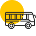

Автобусний тур
Один з найбільш насичених враженнями, доступних за ціною та популярних видів відпочинку. Під час однієї поїздки можна подивитися пам'ятки відразу кількох міст, причому це обійдеться навряд чи не в рази дешевше за класичний екскурсійний тур з ночівлями в готелях.
Джипінг
Це подорож на автомобілях високої прохідності з подоланням природних перешкод, це екстремальний вид спорту та відпочинку, що є проходженням туристичного маршруту бездоріжжям на автомобілях.